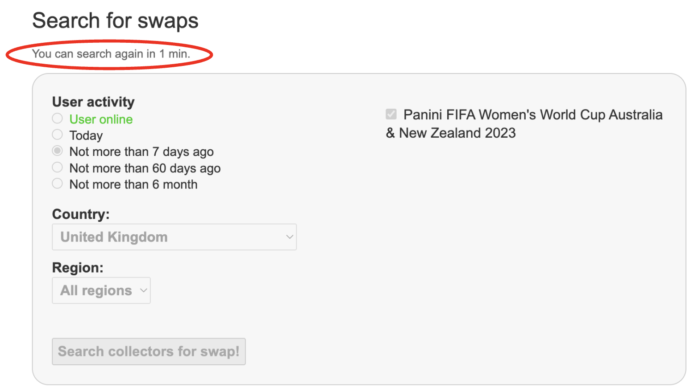
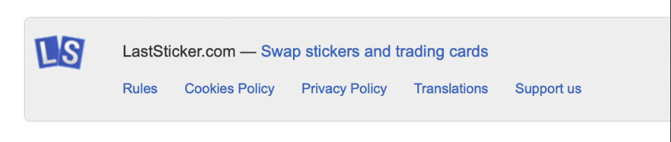

What is user experience?
User experience encompasses the way humans interact with the world, focusing in on digital applications. A UX designer's job is to make a user's experience as seamless and easy as possible, making sure applications are instinctive and satisfying to use, minimizing the likelihood of users going to another site to complete the task they've set out to do. UX designers do this through a range of techniques including the 10 principles, heuristics and UX laws. "User experience" encompasses all aspects of the end-user's interaction with the company, its services, and its products." - Nielsen Norman group
LastSticker.com
LastSticker.com is a swapping website, allowing you to trade stickers and trading cards with people around the world. It's features also allow you to list collections, communicate with other users and discover different collectables.
The good
The website does what it says it does- creates an easy way to contact and swap with people around the world, filling the gap in the market for a very neiche subject. Another positive is that the website doesn't have that many competetors, so is more likely to keep the users it attracts.
The Bad
Unfortunately the list of bad UX is longer than the good. Firstly the application doesn't adapt at all for different web sizes, meaning use on a phone is very dissjointed and clunky. To read any of the text on a phone you have to zoom in and scroll around. Along with this, one of the log in boxes doesn't work- after entering your username and password the website does nothing, forcing you to go to a separate part of the website to log in causing extra unnecessary steps.
References
- Krug, S. (2014) Don’t make me think, revisited: a common sense approach to Web usability. Third edition, Berkeley, Calif.: New Riders.
- Krug, S. (2014) Don’t make me think, revisited: a common sense approach to Web usability. Third edition, Berkeley, Calif.: New Riders.
Heuristic Evaluation
Visibility of System status
"Communicating the current state allows users to feel in control of the system, take appropriate actions to reach their goal, and ultimately trust the brand." -Nielsen Norman Group. After the user has searched for swaps too many times, the user is prevented from searching for one minuite. LastSticker.com lets the user know when they can search next, which helps the user better understand what is going on, consequently creating more trust between the two parties.
User control and freedom
"Users often make mistakes or change their minds. Allow them to exit a flow or undo their last action and go back to the system's previous state."-Nielsen Norman Group. After sending a message, users are unable to delete or edit messages and feedback on other users profiles, giving no room for mistakes. Along with this, after updating lists of stickers, users can't automatically undo what they've changed, making the process more fatiguing and less of a frictionless user experience. This process would make users less likely to use the website, potentially chosing a different site over LastSticker.com.
Flexibility and efficiency of use
" Shortcuts— unseen by the novice user — speed up the interaction for the expert users such that the system can cater to both inexperienced and experienced users." -Nielsen Norman Group.LastSticker.com Automatically identifies possible swaps so users don't have to pick out each sticker manually, making the swapping proccess a lot quicker and providing a more seamless experience. This example could also ba applied to Tesler's Law, as the website has conserved complexity.
References
- Krug, S. (2014) Don’t make me think, revisited: a common sense approach to Web usability. Third edition, Berkeley, Calif.: New Riders.
- Krug, S. (2014) Don’t make me think, revisited: a common sense approach to Web usability. Third edition, Berkeley, Calif.: New Riders.
Psychology principles and UX laws
Hick's Law
At the top of the website page, all the different language options available are displayed in a long line. Despite being accessible and having universal design, the web designer could have minimized the options into a drop down menu to reduce visual pollution and keep the lay out simple.
Postel's Law
When searches are spelt incorrectly the website doesn't correct the spelling or bring up any results. This creates more work for the user, and could prevent them from furfilling their search. This elliminates one of the website's main purposes, and therefore provides a very poor user experience.
Millers Law
Small print information grouped together at the bottom of the page, out of the way and concise. Links used to make the appearance neat.
Fitt's Law & Jacobs Law
"the time to move to a target depends on how big it is and on how far away it is." -Nielsen Norman Group. Here LastSticker.com doesn't use Fitt's Law well, with the placement of the search bar halfway down the home page, meaning the search feature is only accesible from the home page. This design also doesn't follow Jacob's Law, as most websites have the search bar in view as soon as you enter the website. Users have to look for the search bar making the experience very fatuiging and frustrating, potentially losing the attention of the user.
References
- Krug, S. (2014) Don’t make me think, revisited: a common sense approach to Web usability. Third edition, Berkeley, Calif.: New Riders.
- Krug, S. (2014) Don’t make me think, revisited: a common sense approach to Web usability. Third edition, Berkeley, Calif.: New Riders.
Dark Patterns
Dark patterns are features put in place by web designers and corporations in an attempt to make the user spend more time or money on their website. For this section I've decided to look at the website PurePNG.
Disguised Ads
On PurePNG, the dark patteren of disguised ads make it hard for the user to work out how to download the png, and the page could trick them into downloading some other software onto their computer.
Bait and Switch
PurePNG impliments dark patterns again in the form of 'bait and switch'. After locating the hard to find 'download' button, users are promised a 'free' download, however then the website takes you to sign up/log in page.
References
- Krug, S. (2014) Don’t make me think, revisited: a common sense approach to Web usability. Third edition, Berkeley, Calif.: New Riders.
- Krug, S. (2014) Don’t make me think, revisited: a common sense approach to Web usability. Third edition, Berkeley, Calif.: New Riders.
Accessibility and Universal Design
Visual impairments
The website is accessible to blind people as the website has a screen reader, however because of how the website is layed out it could be quite hard to understand as when you click through it takes you through 20 different languages before getting to the main features of the website- swapping stickers. This could become frustrating for the user, potentially causing them to use a different website.
When I applied the cataracts filter over the website, most of the text was very hard to read or illegible, making the website virtually unusable for someone with this condition. The only slightly visible text was the 'search for swaps' button, due to it's size. After zooming in the text still wasn't readable, so to improve accessibility the website should provide different text size options.
On laststicker.com some of the text colour doesn't pass the 'AAA Normal' test, potentially making it hard to read for users who have visual impairments.
Along with this, the 'no mouse' feature is implemented, allowing users who are unable to use a mouse can click through with the keyboard instead, which helps the websites outreach and users' experiences. However, as previously mentioned the lay out of the website makes the click through very long and tedious, taking 26 clicks to get to the 'search for swaps' button compared to the mouse controled version only taking one click.
References
- Krug, S. (2014) Don’t make me think, revisited: a common sense approach to Web usability. Third edition, Berkeley, Calif.: New Riders.
- Krug, S. (2014) Don’t make me think, revisited: a common sense approach to Web usability. Third edition, Berkeley, Calif.: New Riders.
Conclusion
Overall I think LastSticker.com needs a lot of updating and bug fixes. To keep up with growing competition and to avoid losing it's customers improvements need to be made. Dispite this, LastSticker.com does what it states it does, and successfully connects swappers around the world.